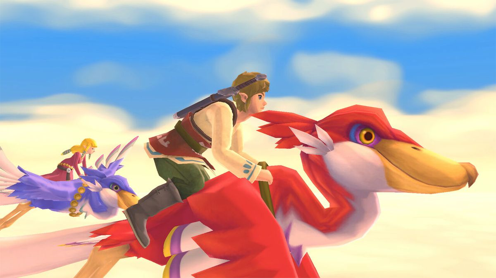
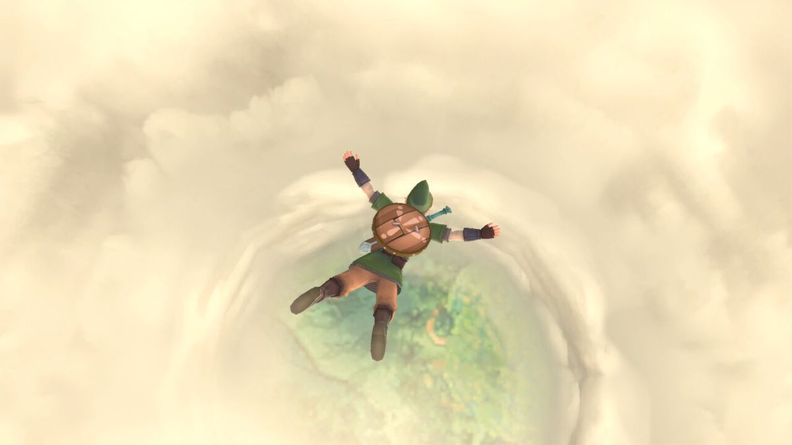

Description
The Legend of Zelda: Skyward Sword once again places the player in control of Link, a Hylian boy who this time around lives in the floating nation of Skyloft. Link is in love with a local girl called Zelda but one day while flying on their bird mounts, a tornado shows up out of nothing and takes Zelda away from Link. After that Link teams up with Fi, a spirit living within a sword and he descends to the long-forgotten surface to search for Zelda.
Images


Game Categories
- Genre: Action
- Players: 1
- Perspective: 1st-Person Behind view
- Visual: Free camera
- Gameplay: Metroidvania Puzzle elements
Quote
Skyward Sword is meant as a prequel to the series, detailing the origins of several of the series’ more iconic elements, while pushing the series’ control and gameplay design template forward. But while this may be a prequel, it is actually the most advanced and complex game in the series to date.